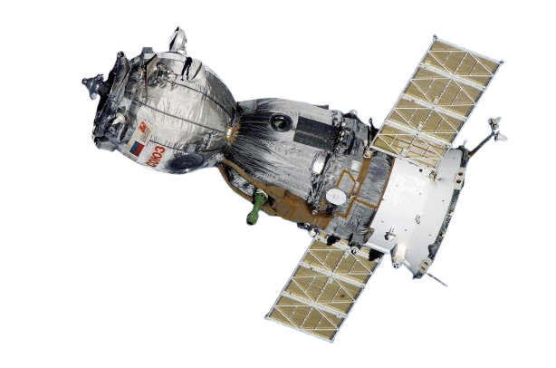

Los satélites artificiales son dispositivos creados por el ser humano y puestos en órbita alrededor de la Tierra u otros cuerpos celestes. Tienen diversas aplicaciones, como telecomunicaciones, navegación, observación terrestre, meteorología y ciencia espacial.